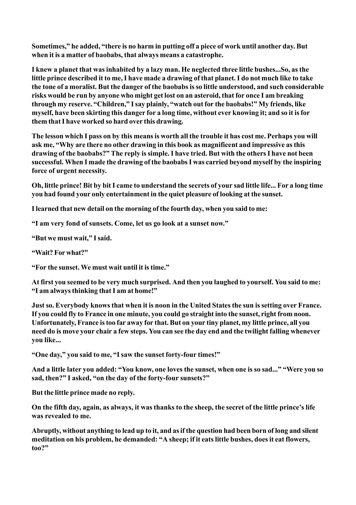

Sometimes,” he added, “there is no harm in putting off a piece of work until another day. But when it is a matter of baobabs, that always means a catastrophe. I knew a planet that was inhabited by a lazy man. He neglected three little bushes... So, as the little prince described it to me, I have made a drawing of that planet. I do not much like to take the tone of a moralist. But the danger of the baobabs is so little understood, and such considerable risks would be run by anyone who might get lost on an asteroid, that for once I am breaking through my reserve. “Children,” I say plainly, “watch out for the baobabs!” My friends, like myself, have been skirting this danger for a long time, without ever knowing it; and so it is for them that I have worked so hard over this drawing. The lesson which I pass on by this means is worth all the trouble it has cost me. Perhaps you will ask me, “Why are there no other drawing in this book as magnificent and impressive as this drawing of the baobabs?” The reply is simple. I have tried. But with the others I have not been successful. When I made the drawing of the baobabs I was carried beyond myself by the inspiring force of urgent necessity. Oh, little prince! Bit by bit I came to understand the secrets of your sad little life... For a long time you had found your only entertainment in the quiet pleasure of looking at the sunset. I learned that new detail on the morning of the fourth day, when you said to me: “I am very fond of sunsets. Come, let us go look at a sunset now.” “But we must wait,” I said. “Wait? For what?” “For the sunset. We must wait until it is time.” At first you seemed to be very much surprised. And then you laughed to yourself. You said to me: “I am always thinking that I am at home!” Just so. Everybody knows that when it is noon in the United States the sun is setting over France. If you could fly to France in one minute, you could go straight into the sunset, right from noon. Unfortunately, France is too far away for that. But on your tiny planet, my little prince, all you need do is move your chair a few steps. You can see the day end and the twilight falling whenever you like... “One day,” you said to me, “I saw the sunset forty-four times!” And a little later you added: “You know, one loves the sunset, when one is so sad...” “Were you so sad, then?” I asked, “on the day of the forty-four sunsets?” But the little prince made no reply. On the fifth day, again, as always, it was thanks to the sheep, the secret of the little prince’s life was revealed to me. Abruptly, without anything to lead up to it, and as if the question had been born of long and silent meditation on his problem, he demanded: “A sheep; if it eats little bushes, does it eat flowers, too?”
